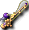

釣魚
可以從盧克西翁的海上警備兵(91.154)前往釣魚地圖釣魚。
需要另外購買的釣竿和魚餌等。
相關道具請看這裡
- Item/道具/釣魚
- 商城道具
也有可以交換釣到的魚的NPC。
水母3隻→熱帶魚1隻
熱帶魚3隻→章魚1隻 等
釣魚流程
釣魚時需要的東西有以下5樣。
潛水服・・・可在商城購買。(免費)
釣魚技能・・・可向能釣魚的島上的猴子商人NPC購買。
釣竿・・・有竹製釣竿(向猴子商人NPC購買)、 碳纖維釣竿(向盧克NPC釣客購買或交換)、
碳纖維釣竿(向盧克NPC釣客購買或交換)、

鈦合金釣竿(在商城購買，付費)共3種。竹＜碳纖維＜鈦合金，依序越容易釣到好東西。
沒有使用次數限制。(鈦合金有1個月的期限)
魚餌・・・有蚯蚓(向猴子商人NPC購買)、 章魚丸子、超級麻糬丸子(向釣客購買或交換)、
章魚丸子、超級麻糬丸子(向釣客購買或交換)、
一發GTS(在商城購買，付費)共4種。
蚯蚓＜章魚＜麻糬＜一發GTS，依序越容易釣到好東西。
不管哪種，購買一次都能拿到100個。(100次份。一發GTS有1個月的期限)
不是一發GTS的話釣不到河豚・龍蝦・鯊魚。
菜刀・・・有料理用菜刀(向猴子商人等購買)、 料理用鉻菜刀(在商城購買，付費)
料理用鉻菜刀(在商城購買，付費)
共2種。不管哪種，購買一次都能拿到99個。
料理用菜刀對河豚・龍蝦・鯊魚砍不動所以無法使用，也可能失敗。
準備好這些之後，從上述NPC移動到釣魚地圖(無法海域1～3)。
移動必須穿著潛水服。
無法海域往右下(東南)前進，往左上(西北)則是返回。
從1→3深度會增加，釣魚變難，也更容易釣到好東西。
地圖上有幾座島，點擊各島的紫色管理猴就能從水面上到島上。
學會釣魚技能，在島的海邊裝備釣竿和魚餌就準備完成了。(魚餌會放入追加武器欄)
使用釣魚技能或按空白鍵就會開始釣魚。
接著會出現這樣的量表，藍色量表會漸漸減少。
藍色量表完全消失的話，就算消耗了1個魚餌，並說「嗚嗚……」。
如果有什麼東西上鉤，左邊的紅色浮標會上下晃動約3秒後進入拉起的作業。
順帶一提，藍色量表大約每1cm就有浮標晃動的點，有咬餌時
一定會在那個固定的點晃動。(大約有10處，推測是在那裡判定)
咬餌來臨浮標晃動後，拉起時量表會切換。
這次浮標會從左往右移動，不時經過出現的綠色量表。
在這個浮標經過綠色量表的瞬間，抓準時機按空白鍵。
就是類似所謂的音樂遊戲。
依按下的時機會顯示「PERFECT!(藍)」「GOOD!(黃)」「MISS(紅)」3種，
PERFECT、GOOD越多，釣到的可能性越高。
如果釣到東西會說「太好了！」，相反失敗時會說「好不甘心～」，
兩者都會消耗1個魚餌。釣到時日誌會顯示釣到什麼，並放入道具欄。
浮標流動的速度有5個等級左右，最快的情況需要相當好的反射神經。
量表不只繞一圈，最多可能繞4圈，圈數增加會釣到更好的東西。
另外，也有全部PERFECT還是釣不到(好不甘心～)的時候。
反過來全部MISS也釣得到(太好了！)的時候。這種可能性相當低。
PERFECT、GOOD只是提高釣到%數的東西，這樣想就好。
綠色量表的空白鍵判定發生在綠色量表的左右周邊，稍微早按或
稍微晚按都會是MISS，所以狂按空白鍵的話全部都會是MISS。
偶爾會像這樣綠色量表重疊，
這種情況連按2次空白鍵似乎不錯。(未確認)
像這樣每一圈出現的量表個數很多，或有5mm以下的短量表時，
大多圈數也多，是能釣到好東西的徵兆，所以MISS最好少一點。
這種情況，浮標流動的速度會比較慢。
釣獲物按藍槍魚＜水母＜熱帶魚＜章魚＜魟魚＜白帶魚＜河豚＜龍蝦＜鯊魚
的順序越來越好。除了這些以外有時會釣到腐朽的箱子，雙擊打開
裡面可能有上述的釣獲物或卷軸等。
MAP1有時會釣到垃圾，這是任務要用的。
垃圾和魚類都可以雙擊放回海裡。
對釣獲的魚類使用料理用菜刀、料理用鉻菜刀就會變成「處理過的○○」。
右鍵點擊它會顯示料理所需的材料，
向猴子商人NPC等購買，使用同時販賣的料理組合來料理，
就會完成對應原材料的料理。釣魚能做出的料理Weight為0，天上也能使用。
河豚・龍蝦・鯊魚的完成料理效果相當高。
處理食材的副產物與追加知識
目前，釣魚的目的與其說是料理品，不如說是處理食材時的副產物。
處理食材時出現的道具
肉、 赫爾莉菈、
赫爾莉菈、 快速藥水、
快速藥水、 破損武器電漿、破損耳環電漿、舊卷軸(全種類)、卷軸-人(全種類)、固態動作體力增強藥水、
破損武器電漿、破損耳環電漿、舊卷軸(全種類)、卷軸-人(全種類)、固態動作體力增強藥水、 魔力增強藥水、技能點數增強藥水、物理迴避力增強藥水、敏捷之水藥、染色藥(可愛的紅・綠・紫・？・鮮豔的藍)、
魔力增強藥水、技能點數增強藥水、物理迴避力增強藥水、敏捷之水藥、染色藥(可愛的紅・綠・紫・？・鮮豔的藍)、 奇蹟補藥(1～4)、
奇蹟補藥(1～4)、 經驗加成(1～4)、波普衝擊(1～4)、幸運護身符(1～4)
經驗加成(1～4)、波普衝擊(1～4)、幸運護身符(1～4)
這之中有很多是只有釣魚才能取得的道具，特別是幸運護身符
會放入目前沒什麼用途的追加武器欄，是任何職業都能無條件增加最大HP/MP/SP的道具，
所以相當珍貴。
包含這個幸運護身符在內，處理食材時要取出目標物品是很罕見的。
能取出東西的機率推測約5～10％(10～20隻1個)左右。
幸運護身符以外目前需求不太高，所以專攻這個道具的話，
在已確認的階段
[1]・・・藍槍魚、 水母、
水母、 章魚
章魚
[2]・・・魟魚、 白帶魚
白帶魚
[3]・・・熱帶魚、章魚、 河豚、
河豚、 龍蝦、
龍蝦、 鯊魚
鯊魚
[4]・・・藍槍魚、白帶魚、河豚、龍蝦、鯊魚
已確認分別能從這些釣獲物的處理中取出。
不過，即使是[3]或[4]，作為釣獲物最珍貴的鯊魚也並非高機率。
參考一下，編輯者認為條件最好的
「鈦合金竿・一發GTS・鉻菜刀・MAP3」釣了約20000次(含失敗，單純以魚餌數計算)
的結果，取出的幸運護身符各自數量如下。
[1]・・・10個
[2]・・・5個
[3]・・・8個
[4]・・・1個
另外，完全沒有和NPC交換，把釣獲物原封不動全部處理。
不只幸運護身符，經驗加成或波普衝擊等也一樣，
若和盧克西翁的NPC把釣獲物交換成上位物品，處理的數量就會減少，
能取出東西的數量本身也會減少。
章魚等也能取出[3]，所以除非非常想要[4]，否則最好不要交換。
以上述條件釣魚100次，包含腐朽的箱子在內，釣上來的總數大約30～40個。
也就是說在這個條件下釣到的比率推測為30～40％左右。
其中上位釣獲物(河豚・龍蝦・鯊魚)3種合計大約5～10個左右。
釣魚時，購買時魚餌持有100個，所以基本上會釣100次。
藍槍魚～鯊魚、 腐朽的箱子、
腐朽的箱子、 垃圾、其他活動相關(幼小的黑鯊等)，
垃圾、其他活動相關(幼小的黑鯊等)，
可以釣到相當多種類的東西，所以道具欄最好預留相當多空間再開始。
另外，空的道具欄至少要有2個才能釣魚。
釣魚地圖不能丟棄物品且只能使用記憶之書，所以必須賣些東西給猴子商人，
或先回城鎮才能減少道具欄的佔用，請事先準備好。
釣魚相關NPC
| 名稱 | 座標 | 內容 |
 海上警備兵 海上警備兵 | 91,154 | 移動到海洋地圖 |
| 釣仙人 | 64,151 | 釣魚任務相關 |
| 釣客 | 105,156 | 碳纖維釣竿 400,000G or 魟魚15隻 |
| 章魚丸子 150,000G or 熱帶魚10隻 | ||
| 超級麻糬丸子 300,000G or 章魚15隻 | ||
| 蒙格羅 | 107,156 | 藍槍魚3隻→水母1隻 |
| 水母3隻→熱帶魚1隻 | ||
| 熱帶魚3隻→章魚1隻 | ||
| 章魚3隻→魟魚1隻 | ||
| 魟魚3隻→白帶魚1隻 | ||
| 蒙格拉 | 109,156 | 白帶魚2隻→河豚1隻 |
| 河豚2隻→龍蝦1隻 | ||
| 龍蝦2隻→鯊魚1隻 | ||
| 克魯特 | 113,147 | 料理組合 10,000G |
| 檸檬 100G | ||
| 蘑菇 100G | ||
| 牛奶 100G | ||
| 料理用酒 100G | ||
| 麵粉 100G | ||
| 鹽 100G | ||
| 香辛料 100G | ||
| 醬油 100G |
釣仙人
釣仙人的教導[1]
- 履歷 無
- 開始條件 習得釣魚技能
- 內容 帶著釣竿和魚餌與盧克西翁的釣仙人說話，帶著魟魚50隻和白帶魚50隻再次說話
- 獎勵 稱號「釣魚名人」
釣仙人的教導[2]
- 履歷 無
- 開始條件 完成釣仙人的教導[1]
- 內容 與盧克西翁的釣仙人說話，帶著垃圾100個再次說話
- 獎勵 稱號「海之守望者」、腐朽的箱子×10
留言欄（不擅長編輯Wiki的人請在此留言）
目前顯示最新的10件。請參閱留言頁面
- 穿過潛水服之後，即使脫掉衣服或賣掉，使用技能時的動作還是變成攻擊，這是為什麼呢 -- 2007-09-09 (日) 19:31:16
- 按Tab不是就恢復了嗎？ 和有沒有穿戴付費道具無關，只要是裝飾模式就會變成攻擊。 -- 2007-09-09 (日) 19:38:28
- 謝謝你 -- 2007-09-10 (一) 15:40:08
- 釣仙人的教導[1]拿到稱號之後，魟魚和白帶魚會消失嗎？ -- [[ ]] 2007-09-20 (四) 22:23:32
- 任務達成所需的份會被回收而消失。[2]的垃圾也一樣。 -- 2007-09-20 (四) 23:44:44
- 果然是這樣啊…… 謝謝 -- 2007-09-21 (五) 00:15:30
- 釣魚相關的情報很少，所以我大幅增補了內容。有些地方帶有主觀，希望有人幫忙修正 -- 喜歡釣魚? 2008-02-12 (二) 13:21:24
- 我覺得不是假餌而是浮標吧.. -- 2008-08-12 (二) 03:18:55
- 從藍槍魚掉出了幸運護身符3。 -- 2008-08-16 (六) 14:48:50
- 釣仙人的教導［1］只要學會技能，即使沒帶釣竿和魚餌也能開始～ -- 釣吉? 2010-01-08 (五) 15:39:34
- MAP2也確認有垃圾 （碳纖維・超級麻糬丸子） -- 初心者? 2011-02-24 (四) 09:43:21
- &#